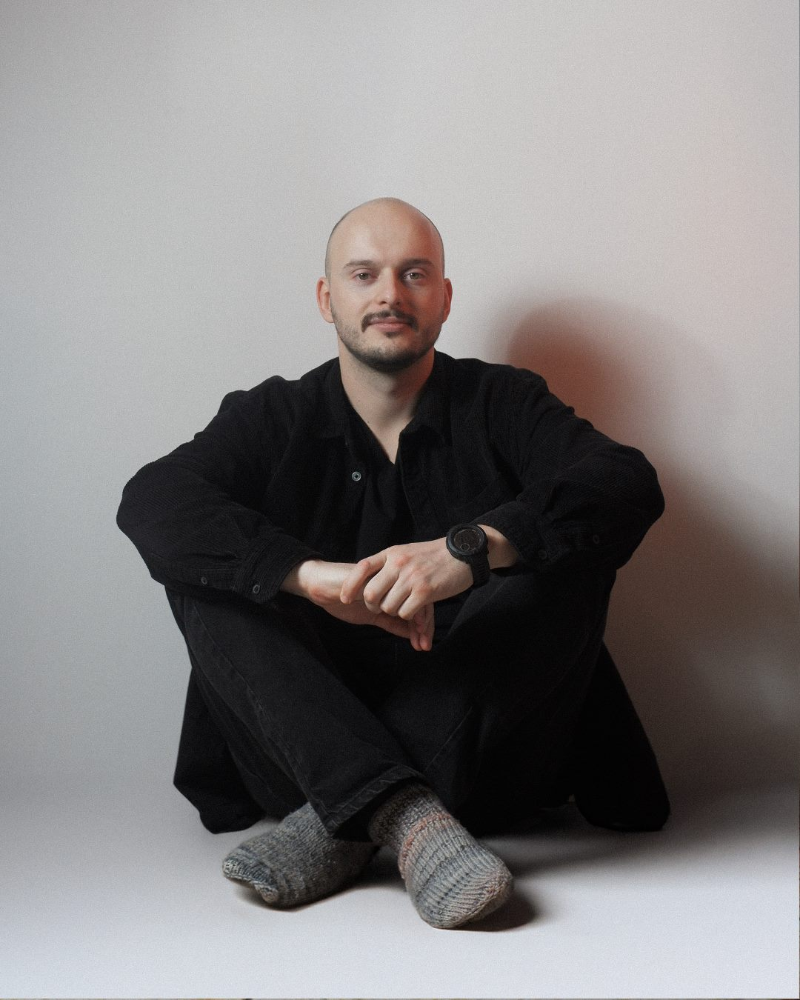
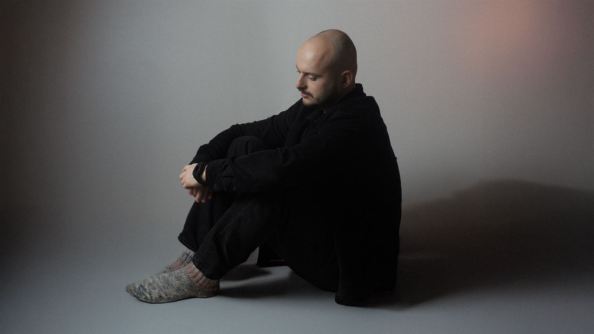
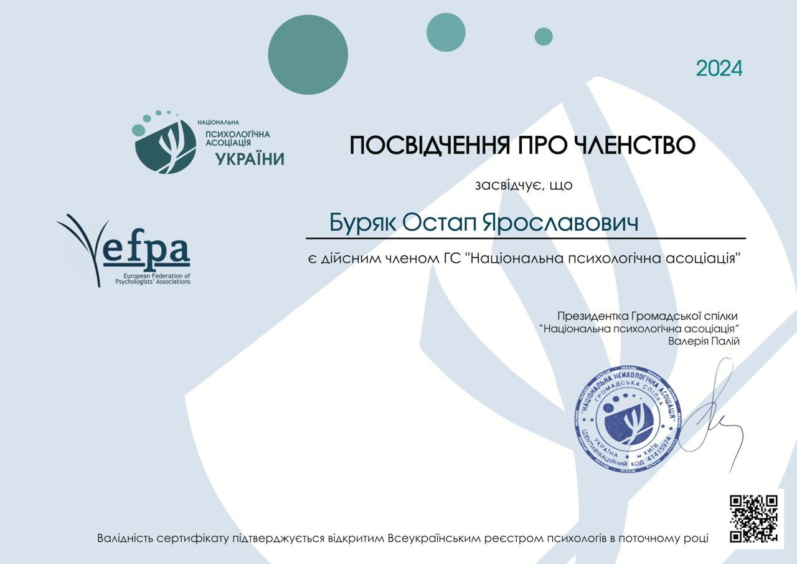

Диплом магістра з відзнакою
Диплом магістра з відзнакою
Психолог · індивідуальна терапія
Я Остап — психолог
Що хочу сказати собі сьогодні?
Тобі не потрібно мати все розкладене по полицях. Тобі не потрібно бути вже в кінцевій точці Б і розуміти, як це життя правильно жити. Не треба мати все figured out. Цікаво звучить англійською.
Перетворювати невизначеність у визначеність — створювати фігуру. Швидко прагнучи створити фігуру (визначеність) з невизначеності, ти втрачаєш можливість знайти щось нове. Я знаю, це складно — залишитись у невідомому. Але це, певно, єдиний спосіб жити по-новому, по-своєму.

0
сесій проведено
0
роки практики
0
грн / сесія

01 — Про мене
Привіт! Мене звати Остап
Я психолог та гештальт-терапевт у навчанні (4-ий рік навчання, Київський Гештальт Університет). Вже 3 роки веду терапевтичну практику. У роботі використовую техніки гештальт-терапії, когнітивно-поведінкової терапії та знання з нейропсихології.
До мене зазвичай звертаються із запитами: депресія, тривога, стрес, панічні атаки, труднощі у стосунках, самотність, особисті кордони, вигорання, прийняття складних рішень, пошук себе, брак мотивації, сепарація з батьками.
Про себе. Я одружений, маю 9-річного сина. До психології 10 років працював стратегом у маркетингу та рекламі. Переїхав з Києва у маленьке гірське село на Закарпатті, де зараз і живу з сім’єю. Пишу вірші, філософствую, фотографую, граю на музичних інструментах. Досліджую роботу з тілом і медитацію.
Запрошую вас у терапію ❤
02 — Запити
З чим працюю
Працюю з
Не працюю з
- хімічні залежності
- розлади особистості
- психопатологія
- спроби самогубства
Веду лише індивідуальну терапію — без парного чи сімейного формату.
03 — Метод
Підхід
Основна мета гештальт-терапії — розширити усвідомлення. Я допомагаю клієнту усвідомити, як його минулий досвід впливає на те, як він проживає життя зараз і планує своє майбутнє. Як тільки приходить усвідомлення — з’являється можливість для змін.
Гештальт-терапія покращує контакт зі своїми почуттями, емоціями, зі своїм тілом. Основна частина сеансів проходить у форматі бесіди та дослідженні тілесних відчуттів. По мірі необхідності і з вашої згоди я пропоную вправи та експерименти.
Чого точно не буде на наших сесіях — осудливого, знецінюючого, соромлячого, нав’язливого ставлення до вас.
Я — людина. І все людське мені не чуже.

04 — Кваліфікація
Освіта
Диплом магістра з відзнакою
 Введення у гештальт-терапію, I ступінь
Введення у гештальт-терапію, I ступінь
 Гештальт-підхід у роботі з панічними атаками
Гештальт-підхід у роботі з панічними атаками
 Гештальт-підхід у роботі з депресивним досвідом клієнта
Гештальт-підхід у роботі з депресивним досвідом клієнта
 Гештальт-підхід у роботі з темами співзалежності
Гештальт-підхід у роботі з темами співзалежності
 «Тіло як динаміка руху» з Руелою Франк
«Тіло як динаміка руху» з Руелою Франк
 Ключовий спікер конференції
Ключовий спікер конференції
 «Мозок, культура, особистість»
«Мозок, культура, особистість»

Член Національної психологічної асоціації05 — Досвід клієнтів
Відгуки
Сесії Остапом не поставили мене на шлях успішного успіху і не навчили 15 готовим правилам високоефективних людей. Натомість кожна наша зустріч проходила в атмосфері повного прийняття, і це дало мені можливість поглянути на речі під різними кутами.
Остап — третій психолог, з яким я працюю, і от після перших 10 сесій я щасливий відчувати, що це «мій» терапевт. Словом, високого рівня спеціаліст та просто класна людина. Всім Остап!
Остап це дуже крутий тіп. Він чує, включається у емоційний вайб та з ним почуваєшся безпечно. 10 «а що відбувається на рівні тіла» із 10.
З Остапом я відчуваю себе в безпеці, я відчуваю що мене почули і зрозуміли — це дає змогу відкритися. Я стала краще розуміти себе, свої емоції та стани. Кожна сесія як крок до емоційної стабільності.
Приємний і легкий в спілкуванні спеціаліст, який ділиться своїм досвідом. За короткий час зміг допомогти знайти свої точки опори і побудувати подальший шлях.
Після кожної сесії мені ставало набагато легше і вільніше сприймати дійсність. Коментарі Остапа часто досить влучні, що дозволяють глянути на ситуацію під новим кутом.
Остап дуже класний спеціаліст. Складається враження, що він розуміє тебе з пів-слова. Його поради ґрунтуються на великій доказовій базі та власній терапії. Дуже рекомендую!
Його професіоналізм, уважність та глибоке розуміння людської психології допомогли мені віднайти внутрішню рівновагу. Кожна сесія була наповнена довірою та підтримкою.
Вже з першої сесії я відчула атмосферу прийняття та підтримки, яка сприяє відкритості. Остап уважно підходить до деталей і вміє підсвітити те, що я могла не помічати раніше.
Приємна людина, якій не страшно відкритись — з перших хвилин було зручно розмовляти наче з давно знайомим товаришем. Раджу тим, хто боїться відкриватись людям.
Ще 12 відгуків — на профілі rozmova.me

06 — Контакти
Записатись
Напиши кілька речень про те, що зараз відбувається. Я відповім упродовж доби і запропоную час для першої зустрічі.
© 2026 Остап — психолог
Наверх ↑